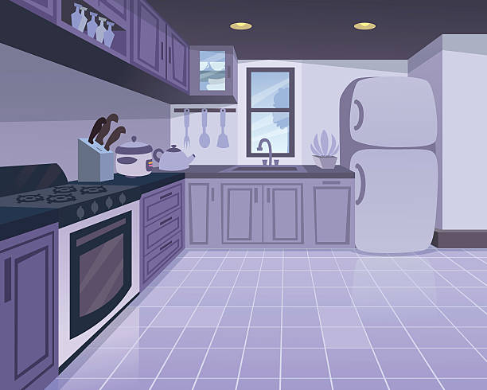

Преглед на домот
Паметен дом се состои од неколку простории каде се обезбедени сензори кои овозможуваат пријатна домашна атмосфера.
Вашиот дом има 4 простории.
Бројот на сензори во секоја просторија е 3.
Спална соба
Дневна соба

Кујна
Градина
Нотификации
Гласен звук во Дневна соба
Се регистрираше гласен звук во дневната соба над 50 dB. Проверете ја собата.
Отворена капија во Градина
Капијата е оставена отворена повеќе од 30 минути.
Висока температура во спалната соба
Температурата во спалната соба е над дозволената граница од 24°C. Проверете ја собната температура.
Филтерот за вода треба да се замени
Преостанатиот капацитет на филтерот за вода е под 10%. Заменете го филтерот.
Зголемена концентрација на чад во кујната
Измерената концентрација на чад во кујната ја достигнала или надминала границата од 50%. Проверете ја состојбата во кујната.
Преголема влажност на почвата во градината
Влажноста на почвата е над 80%. Проверете дали растенијата добиваат премногу вода.
Зголемена загаденост на воздухот во градината
Измерената загаденост на воздухот е над 60%. Проверете ги условите во градината.
Известување: Портата во градината е отворена
Портата во градината е оставена отворена. Затворете ја и заклучете.